Remplacer les anciennes interfaces du projet existant
Interface Legacy avant
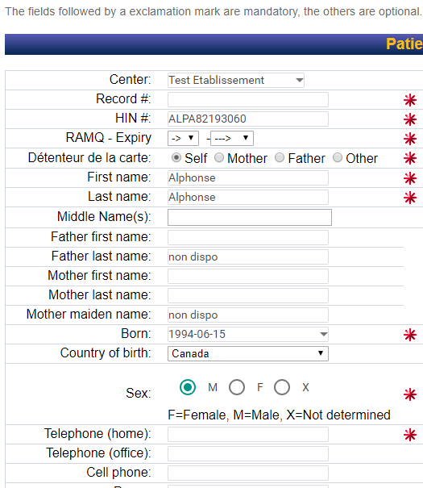
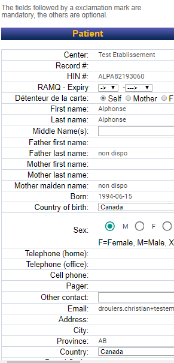
Interface malade maintenant
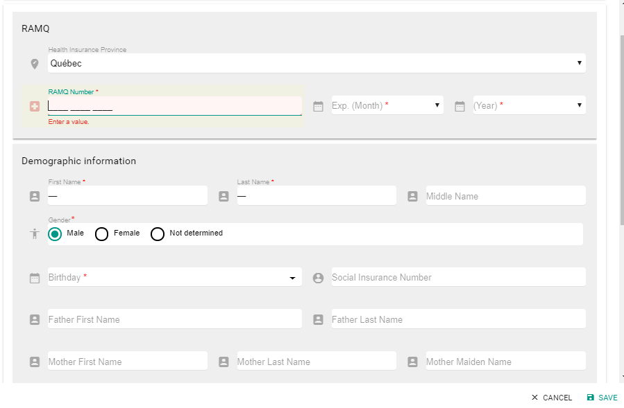
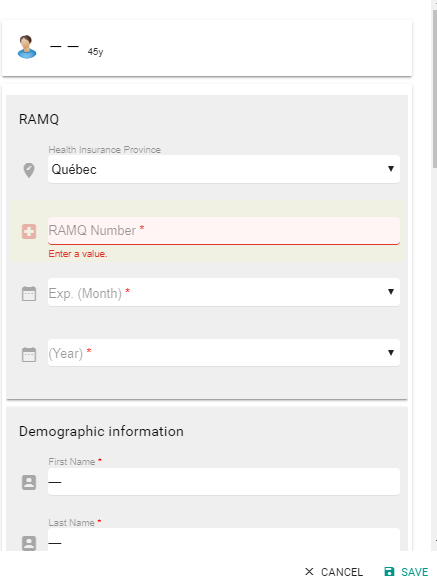
Notes:
Test: Indicateur principal car les autres en découle plus ou moins!
Architecture: Mauvaise ré-utilisation de code, copier/coller, etc.
Peur: Trop de travail, toujours des imprévus, on réduit les fonctionnalités
Ancien: Vieilles technologies, code archaïque et hétérogène
Programmeur: Impossible d'obtenir une explication sur certaines choses bizarres.
## Base de données

Notes:
**RAPIDE**
* Pas de FK, mauvaise normalisation
* Logique éparpillée entre stored proc et code
## Monolithique

Notes:
**RAPIDE**
* Couplage extrêmement élevé
* Code copié/collé
Un monolithe est difficile à modifier. Chaque changement peut entrainer une cascade
d'erreur de compilation, de tests brisés ou de bogues difficiles à attraper.
## Résultat

Notes:
Il est même difficile de commencer à le tester car il n'a pas été écrit pour et il faut
refactorer aggressivement, ce qui prend énormément de temps!
Rendre la logique simple avec le *DDD*
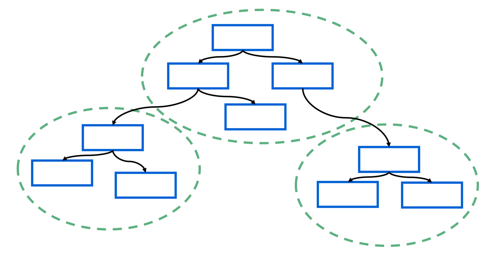
Objectifs du *Domain-Driven Design*
Approche développement itérative
Focus sur les règles d'affaires
Collaboration entre les parties avec un langage commun
Crée un modèle beaucoup plus proche du domaine d'affaires
Langage Commun (*Ubiquitous Language*)
Définition des termes du domaine d'affaires
Permet d'être rigoureux dans le nommage du code
Simplifie la communication avec les experts du domaine
Aggrégat (*Aggregate*)
Représente une grappe d'objet
Traité comme une seule entité consistente
Modifications atomique
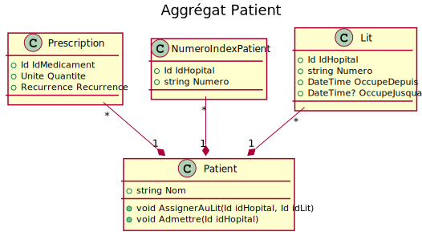
Racine d'Aggrégat (*Aggregate Root*)
Objet principal
Reçoit les opérations
Point d'entrée unique
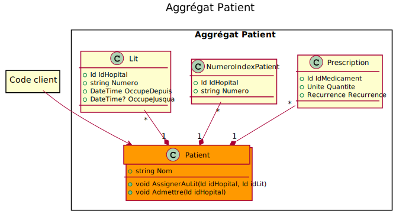
Code du Patient
public class Patient : RacineDaggregat
{private readonly List<Prescription> prescriptions;public ReadOnlyCollection<Prescription> Prescriptions { get; }public void Prescrire(Id idMedicament, Unite quantite, Recurrence recurrence)
{
if (this.prescriptions.Any(x => x.IdMedicament == idMedicament))
{
throw new ExceptionMedicament("Médicament déjà prescrit!");
}this.prescriptions.Add(new Prescription(idMedicament, quantity, recurrence));
}
}
Code du AggregateRoot
public class RacineDaggregat
{public Id Id { get; private set; }
}
*Value Object*
Objet Immuable identifié uniquement par ses valeurs
Rend explicite un concept du domain d'affaire
Définit des comportements de ce concept
Exemples
Une valeur monétaire
Une plage de dates
Une récurrence de médicaments
Un identifiant avec un format spécifique
*Value Object* Argent
public struct Argent
{
public readonly decimal Valeur;
public readonly Devise Devise;public Argent Additioner(Argent autre)
{if (this.Devise != autre.Devise)
{
throw new ExceptionDevise(
"Veuillez convertir l'argent à la devise " +
this.Devise.ToString());
}return new Argent(
this.Valeur + other.Valeur,
this.Devise);
}
}
## Utilisation de la classe Argent
public static void DebiterCompte(
Compte compte,
Argent paiement,
IServiceDevise serviceDevise)
{try
{
compte.Balance = compte.Balance.Soustraire(paiement);
}catch (ExceptionDevise)
{
var converti = serviceDevise.Convertir(paiement, compte.Devise);
compte.Balance = compte.Balance.Soustraire(converti);
}
}var montant = new Argent(0.45, Devise.USD);DebiterCompte(compte, montant, serviceDevise);
Contexte (*Bounded Context*)
Domaine d'affaire large et complexe
Plusieurs différentes groupes de données et d'interactions
Les contextes regroupent ces détails
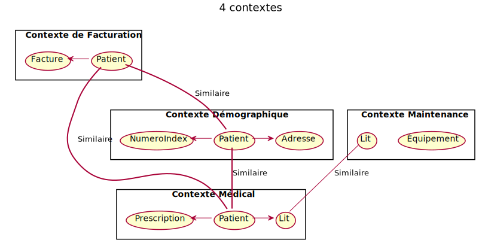
Créer des points d'extension avec le *Event Sourcing*
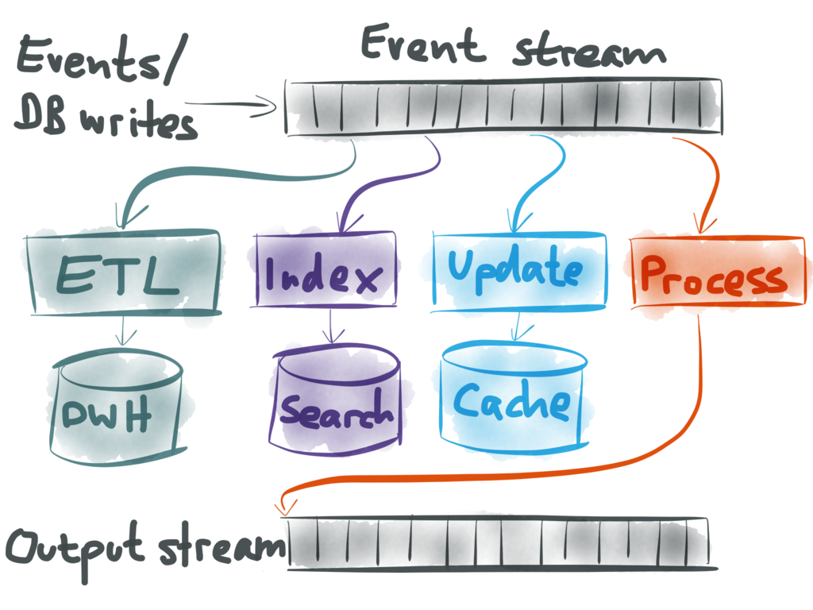
Objectifs de l'*Event Sourcing*
Chaque changement d'état est capturé dans un événement
Les événements sont complets et ne nécessite pas de données externes
Ils sont enregistrés pour reconstruire l'état présent
Séparer les modèles de lecture et les événements
Avantages de l'*Event Sourcing*
Historique complet des changements d'état
Requête temporelle
Ré-éxécution d'événement erronée
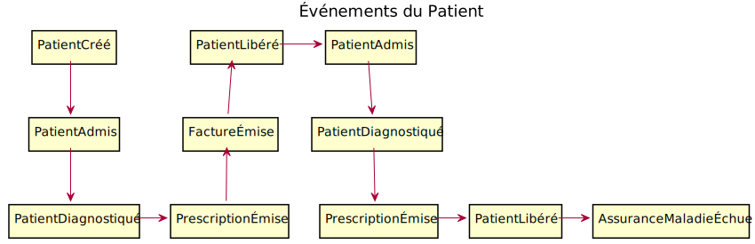
## Événements de Domaine (*Domain Events*)
Contiennent l'information représentant l'action complète de l'utilisateur ou du système.
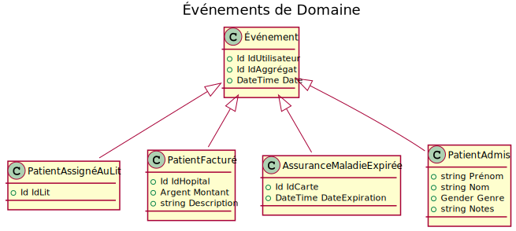
Gestionnaire d'événements (*Event Handlers*)
Une action désirée, un gestionnaire
Court et simple
Multiples destinations
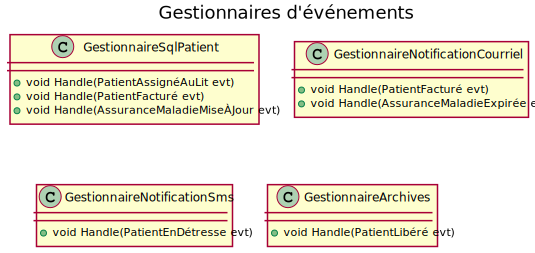
*Repository*
Lis les aggrégats
Enregistre les nouveaux événements
public interface IRepository
{
Task<T> LireAsync<T>(IdAggregat id) where T : RacineDaggregat;
Task EnregistrerAsync<T>(T aggregate) where T : RacineDaggregat;
}
## Code du patient
public class Patient : RacineDaggregat
{
private readonly List<Prescription> prescriptions;
public ReadOnlyCollection<Prescription> Prescriptions;
public void Prescrire(Id idMedicament, Unite quantite, Recurrence recurrence)
{
if (this.prescriptions.Any(x => x.IdMedicament == idMedicament))
{
throw new ExceptionMedicament("Médicament déjà prescrit!");
}
this.Dispatcher(new PrescriptionÉmise(idMedicament, quantite, recurrence));
}
public void Appliquer(PrescriptionÉmise evt)
{
this.prescriptions.Add(new Prescription(idMedicament, quantity, recurrence));
}
}
## Code du AggregateRoot
public class RacineDaggregat
{
public Id Id { get; private set; }private readonly List<Événement> evenements = new List<Événement>();protected void Dispatcher(DomainEvent evt)
{
this.evenements.Add(evt);// Magie de réflection
this.Appliquer(evt);
}public void LireHistorique(IEnumerable<Événement> evenements)
{foreach (var evt in evenements)
{
// Magie de réflection
this.Appliquer(evt);
}
}
}
Lecture des données legacy
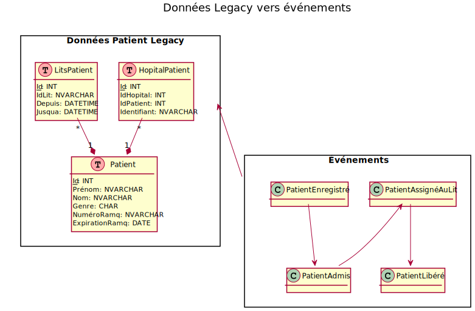
Remplacer les anciennes interfaces du projet existant
Nouvelle architecture
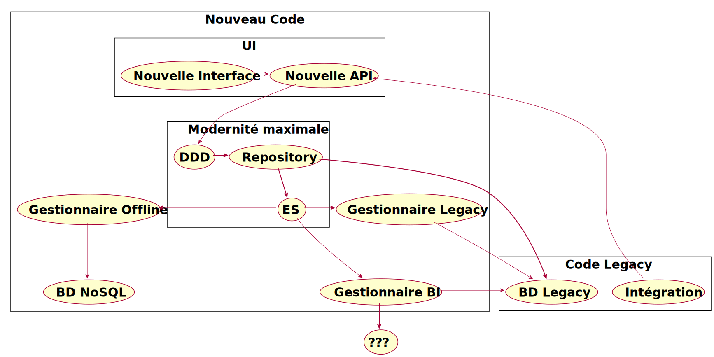
## Nouvelle interface et API
* Interface Web SPA créée avec React / GraphQL / Relay
* API GraphQL et .NET core
## Modernité maximale
* Utilisation de DDD / ES dans l'API
## Création de patient dans l'API
public class AjoutPatient
{
public async Task Executer(IRepository repo, dynamic input)
{var patient = new Patient(input.prénom, input.nom);string idHopital = input.idHopital, numeroIndex = input.numeroIndex;
if (!string.IsNullOrWhiteSpace(idHopital) &&
!string.IsNullOrWhiteSpace(numeroIndex))
{var hopital = await repo.LoadAsync<Hopital>(new IdAggregat(idHopital));patient.LierHopital(hopital.Id, numeroIndex);
}await repo.EnregistrerAsync(patient);
}
}
## Gestionnaire d'événements vers multiples destinations
* 2 destinations principales
* Legacy
* Statistiques / Intelligence d'affaire
## Intégration dans le Legacy
Intégration avec le *legacy*
Tenir à jour l'ancienne base de données
Remplacer des vieilles interfaces par des nouvelles si possible
Retourner les actions pertinentes au nouveau code
Succès concrets
Reconstruction des statistiques après bogue ou modifications
Ajout de nouveaux gestionnaires d'événements facilement
Audit de modification automatique
Logique d'affaire simplifiée
Prototype d'application Offline-first sans modifier le domaine.
### Références


Notes:
Trois livres intéressants à lire pour approfondir ses connaissances en DDD.
C'est un sujet très complexe